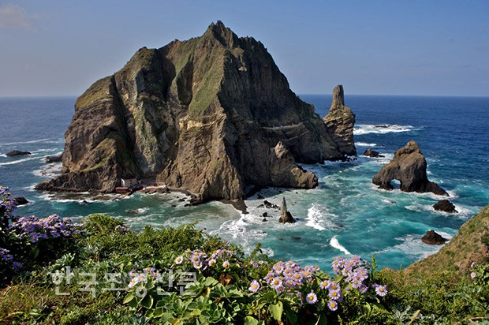

독도는 동도와 서도, 그리고 주변에 크고 작은 89개의 부속도서로 이루어져 있습니다. 이 섬들은 약 460만 년 전 화산 활동으로 형성되었으며, 현재는 침식 작용에 의해 독특한 지형을 보여줍니다. 독도의 지질은 주로 현무암과 안산암으로 구성되어 있으며, 이는 화산섬의 특징을 잘 나타냅니다.
독도에는 다양한 식물과 동물이 서식하고 있습니다. 식물로는 울릉도에서 자생하는 식물이 주로 분포하며, 독도에 서식하는 주요 식물로는 섬기린초, 섬시호, 해국 등이 있습니다. 동물로는 천연기념물 제336호로 지정된 독도강치와 독도새우, 그리고 다양한 조류들이 독도를 찾고 있습니다.
독도의 해양 생태계는 매우 풍부합니다. 독도 주변 해역은 한류와 난류가 교차하는 곳으로, 다양한 어종과 해양 생물이 서식하고 있습니다. 특히 독도는 어업 활동의 중요한 지역으로, 오징어, 대구, 명태 등 여러 어종이 많이 잡히는 곳입니다. 또한, 해조류도 풍부하여 김, 다시마 등의 해조류가 자라고 있습니다.
